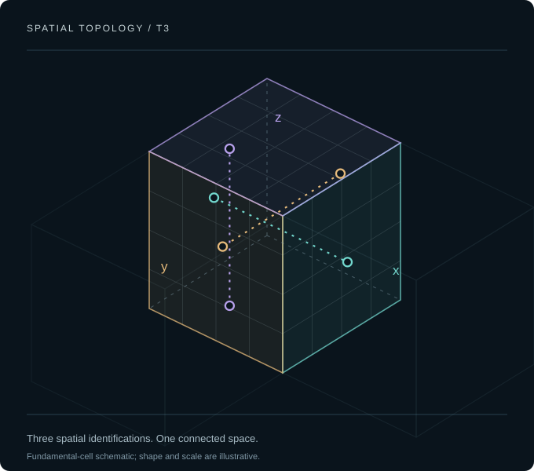
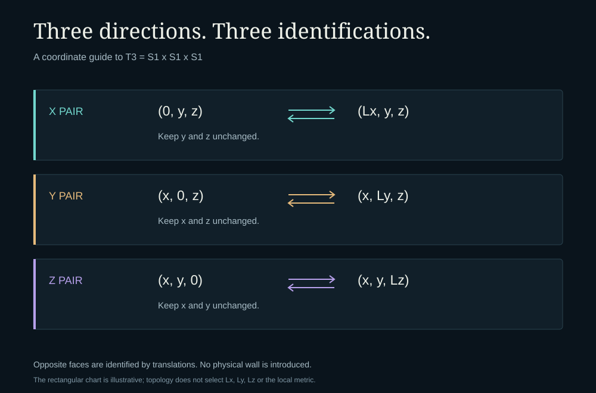

01 / Periodic space
The three-torus cell
Three independent face identifications, with faint adjacent coordinate copies. The cell’s shape and scale are illustrative.
Explore the geometry, download the diagrams, and follow a research result back to its source. A closer look at the proposal and the work behind it.
Original diagrams of periodic spatial identifications.

01 / Periodic space
Three independent face identifications, with faint adjacent coordinate copies. The cell’s shape and scale are illustrative.

02 / The identifications
A coordinate guide to each pair of opposite faces. No external centre, rim or hole is part of this spatial description.
Diagrams: Brendon Boyd / ITSM, 2026 · CC BY 4.0. Reuse with attribution and keep the scope captions. These are topology illustrations, not simulated fields or evidence for the proposed model.
git clone --branch recovery/v12-core-architecture https://github.com/brendohxd/ITSM-Integrated-Toroidal-Syntropic-Model.git
cd ITSM-Integrated-Toroidal-Syntropic-ModelStart with README.md, GEMINI.md, the core identity briefing and active_research.md. The 4 November checkpoint maps the initial coupled principal control, preserved failures and full-SPARC comparator sampling. It separates those results from the still-open actual evolution and matching requirements. The 18 October checkpoint also links P1 rc7 and its preparation record; Papers lists the current retained review versions.
python -B Scripts/verify_research_checkpoint.py --manifest Theory/Verification/ITSM_RESEARCH_CHECKPOINT_2026-11-04.manifest.json --revision 34bad13c1468a3f297d53a499cc64feab836e19dThis reads the named Git revision and checks exact file bytes and source pins. It does not rerun the scientific pipelines, establish physical health or certify a paper. Naming the revision keeps the check meaningful after later website and documentation edits. The 4 November research commit has a verified signature. The older 1 November research commit remains preserved with its separate signed continuity checkpoint. A signature establishes provenance, not scientific validity.
The 13 October checkpoint remains a valid historical entry point for its own revision. Do not regenerate an older manifest against newer mutable documentation to make its hashes agree.
The dust acceptance report links the underlying correction, forcing, order, energy and certified numerical packages. Read their domains before interpreting a pass.
python -B Analysis/MasterTests/test_01_r4c1_g3n5_dust_stage1_acceptance_v1.py --replay Analysis/MasterTests/outputs/r4c1_g3n5_dust_stage1_acceptance_attempt_01This scientific replay uses the project's scientific Python dependencies and checks the retained receipt against a fresh reconstruction. The registered replay refuses a mismatch rather than overwriting the archive. It is separate from the standard-library checkpoint hash verifier. SPARC raw incremental chain blocks remain local and Git-ignored; the repository records their contracts, diagnostics, summaries and artifact hashes, not an independent full-run reproduction.
The Stage-1 problem is complete only in its original linear prepared-data scope. The known restricted nonlinear initial constraints and first material compatibility identity are later, separate results—not a complete nonlinear evolution. Stage 2 has no demonstrated physical GO family, and Stage 3 lacks identifying matching inputs. Failed and interrupted attempts remain part of the evidence.
When producing new calculations, use a fresh version and output directory. Preserve original receipts, their checksums and rejected cases. Do not replace an old FAIL with a later PASS or treat a check count as a physical prediction.
Source code, contracts and owning reports live on the recovery branch. Private vault databases and raw conversation archives are not part of the website.